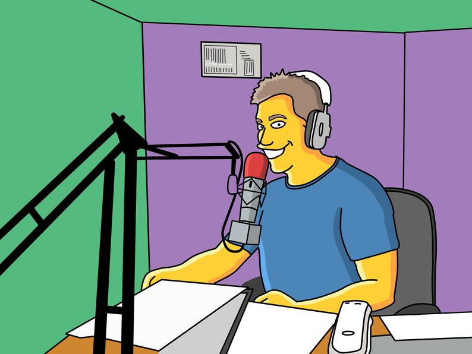

Datos básicos
-Name and surname:
John
Smith
-Birthday:
1995-02-25
-Passport:
1234567890GBR1234567U123456788
-DriveLicense:
ABCDE12345678AB4ZG 12
-Email:
john@gmail.com
-Tlp/Mobile:
+34950677000
Dirección
country:
England
CP:
A3R 3AB
Region:
South East England
Province:
Cheshire
-City:
Manchester
-Street:
Abbey Road
-Address:
Portail
Idiomas
-Mothertongues:
English
-Foreignlanguages:
| Language |
Level |
| German |
A2 |
| Spanish |
B2 |
Datos erasmus
-Career:
Architecture
-Course:
5
-Years studying:
5
-Erasmus places:
Bilbao
Sevilla
Madrid
-Priority place:
Madrid
Habilidades
Skills
Skill1:
Trabajo en equipo
Skill2:
Autocad
Skill3:
Diedric draw
Aptitudes
Aptitude1:
Adaptabilidad
Aptitude2:
Solve problems easily
Aptitude3:
creativity
Observations
-hobby: flying drons
-bestcompetences: Work organization
-socialcompetences: trabajo en equipo
-futureplans: go abroad
-proyectportfolio: https://www.drive.com/search?q/portfolio
Datos básicos
-Name and surname:
George
Adams
-Birthday:
1995-02-25
-Passport:
1234567890GBR1234567U123456789
-DriveLicense:
ABCDE12345678AB4ZG 12
-Email:
george@gmail.com
-Tlp/Mobile:
+34950677000
Dirección
country:
England
CP:
A3R 3AB
Region:
South West England
Province:
Bedfordshire
-City:
Liverpool
-Street:
Savile Row
-Address:
Portail
Idiomas
-Mothertongues:
Inglés
-Foreignlanguages:
| Language |
Level |
| Italian |
A2 |
| Spanish |
B2 |
Datos erasmus
-Career:
Psicología
-Course:
2
-Years studying:
2
-Erasmus places:
Bilbao
Sevilla
Madrid
-Priority place:
Bilbao
Habilidades
Skills
Skill1:
Positive attitude
Skill2:
Sociable
Skill3:
Analyze
Aptitudes
Aptitude1:
Trabajo en equipo
Aptitude2:
Leadership
Aptitude3:
Positive attitude
Observations
-hobby: traveling
-bestcompetences: Work organization
-socialcompetences: trabajo en equipo
-futureplans: go abroad
-proyectportfolio: https://www.drive.com/search?q/portfolio